Lecture 4
Second Order Linear ODEs
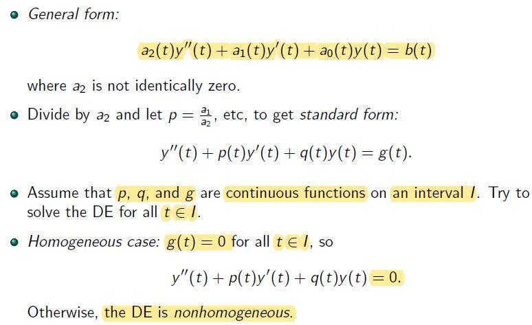
Constant Coefficient Case
- This equation is not homogenous
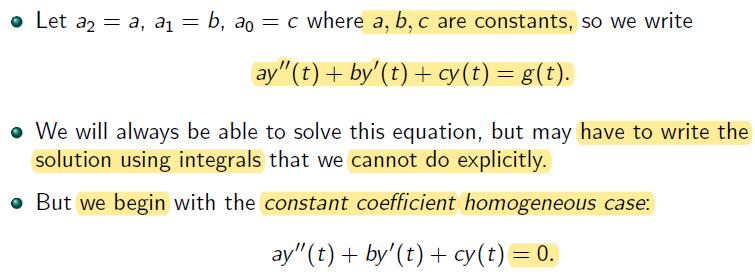
Example
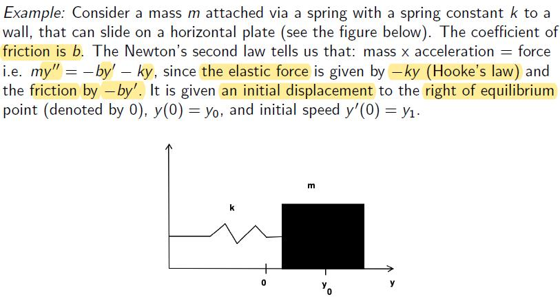
Recall: is accleration, ..., is displacement
Rewrite: , then
If it is not at eq. point, it need to be adjust
The Trial Solution
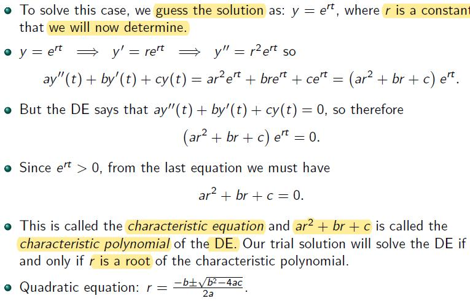
The Three Cases
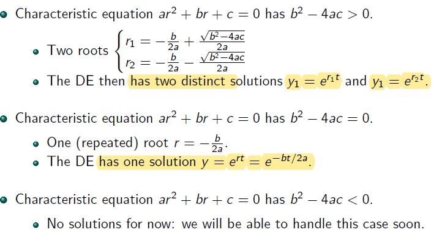
- n (real number) Linearly indep. sol. whose linear combination gives the general sol.
Linearity: Infinitely Many Solutions
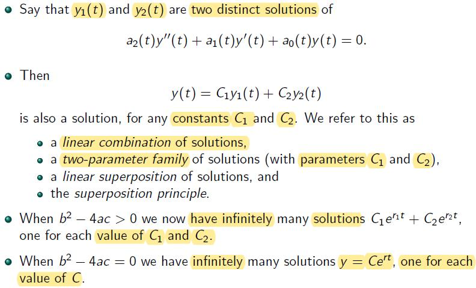
- The (general) solutions of a 2nd order ODEs can be expressed as the linear combination of two distinct solutions of this 2nd order ODEs, and , with two constant and , when the characterstic equations 0.
Proof
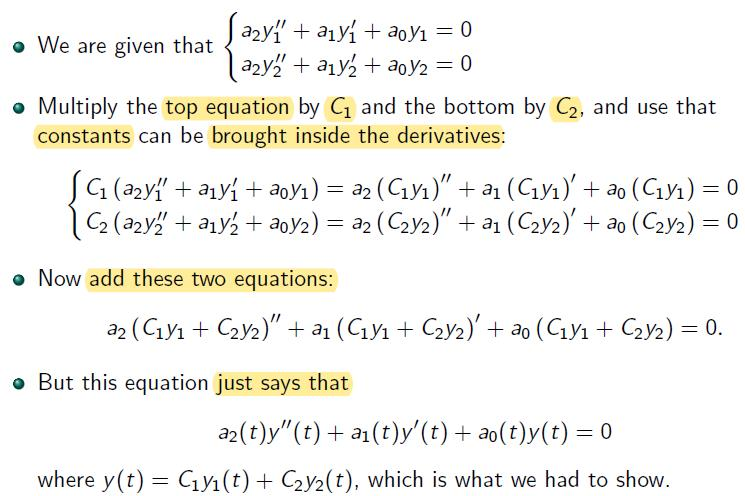
Examples
- Example 1
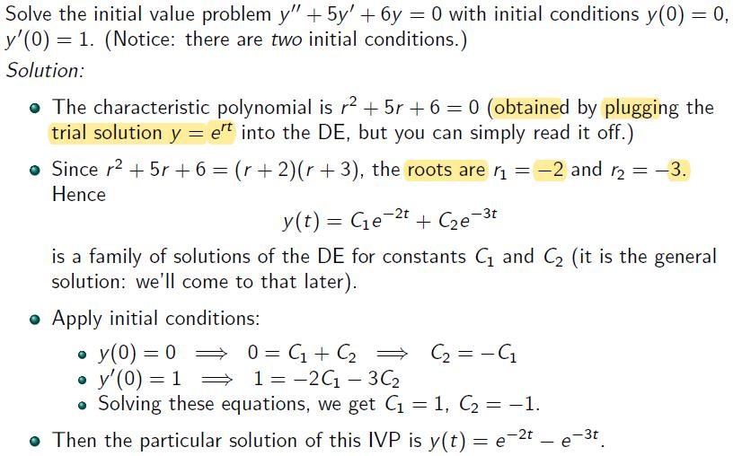
Solution
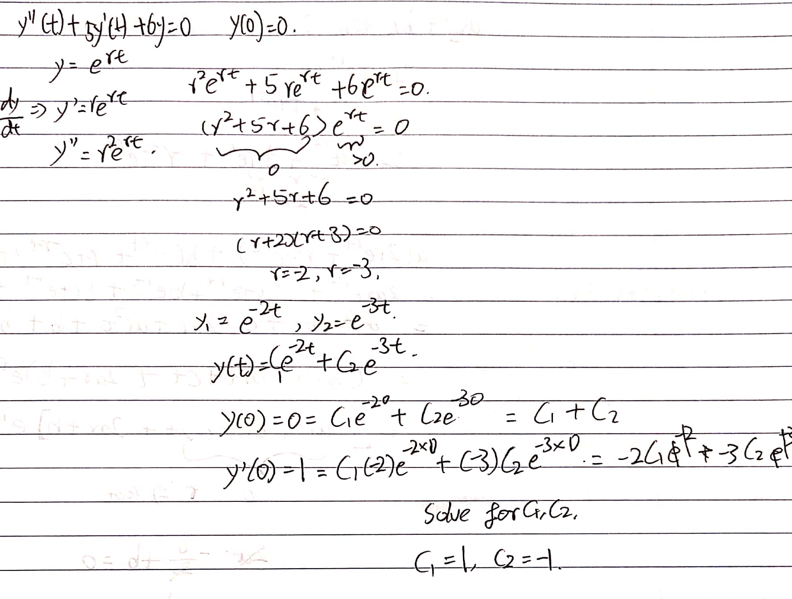
- Example 2
Solution

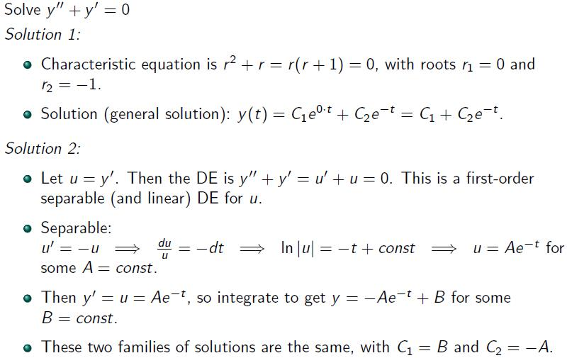
The Case of
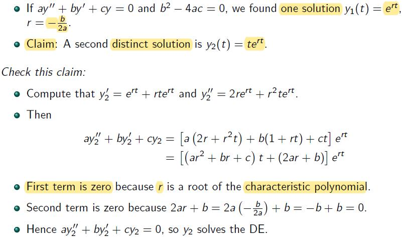
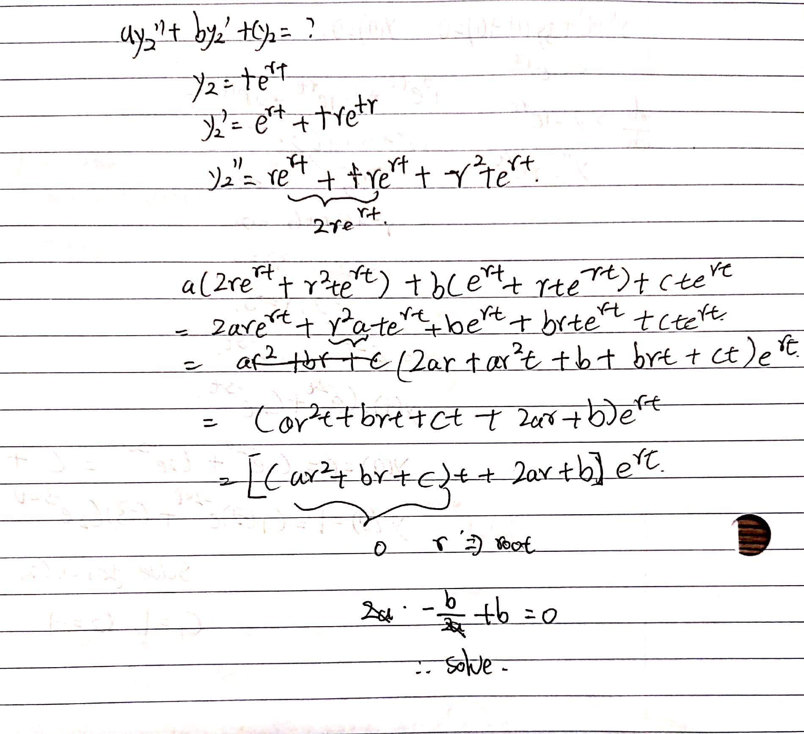
Example
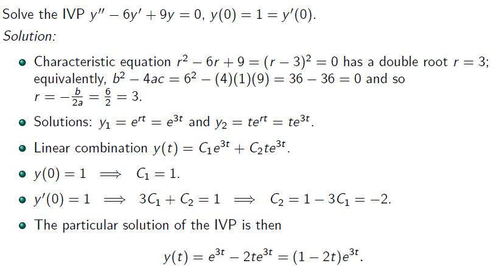
Summary
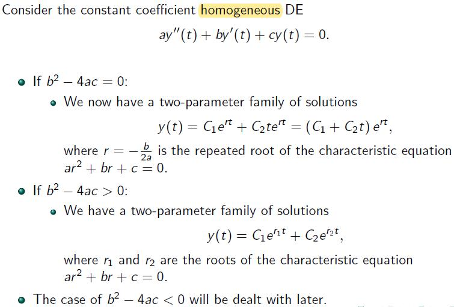